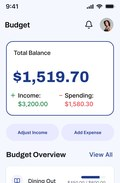

WCAG 2.1 AA on every page.
Yes, I checked. Twice.
Siddhi Manche, UX designer
Hi, I'm Siddhi, a UX designer who started as an engineer </> → studied human-centered design at the University of Michigan → now designing in the United States
Before design, I built websites line by line in HTML, CSS and JavaScript for a label manufacturer
Since then I've designed for taxes , money

and
retail . An IRS app redesign that more than doubled its usability score, an AI budgeting coach people trusted, and an order platform that cut user errors
27%.
I care about the quiet stuff: clear labels, readable color, and the one button you actually need.